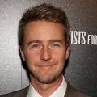
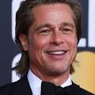
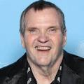

Fight Club fue nominada al Oscar a Mejores Efectos de Sonido que perdió contra "Matrix" y ganó múltiples premios en festivales.
El reparto de la película incluye a actores reconocidos y talentosos que interpretan papeles memorables. A continuación se presenta una lista de los actores principales y sus respectivos personajes:
| Actor | Personaje | Imagen |
|---|---|---|
| Edward Norton | El narrador |  |
| Brad Pitt | Tyler Durden |  |
| Helena Bonham Carter | Marla Singer | |
| Meat Loaf | Robert Paulson |  |
| Jared Leto | Angel Face |